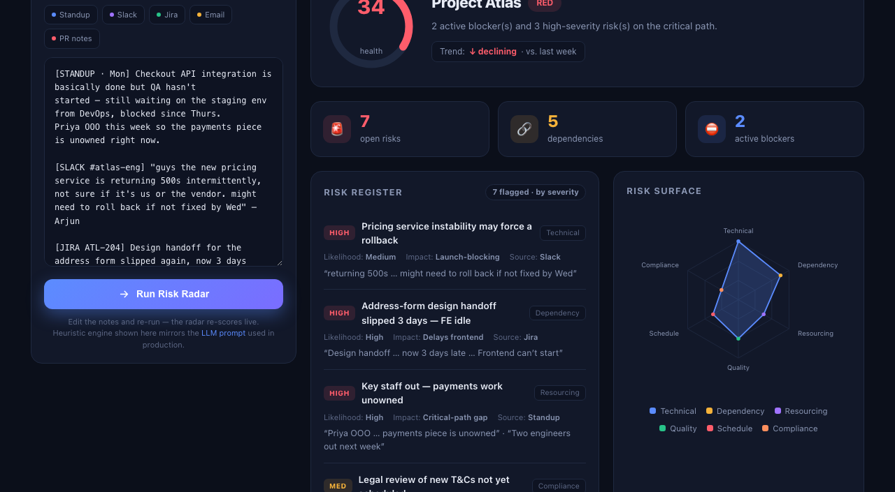

Risk Radar
AI project-health monitor — flags risks, dependencies & blockers early
Challenge #1 × #3
Risk Radar × Status Summarizer
Dummy data · "Project Atlas"
100-word summary
Risk Radar ingests messy, multi-source project updates — standups, Slack, Jira, status emails, PR notes — and turns them into an early-warning dashboard. A single engineered Claude prompt extracts and separates three things teams constantly conflate: risks (could go wrong), dependencies (X waits on Y), and blockers (stopped now), scoring each by impact × likelihood and citing the exact source phrase as evidence. It outputs strict JSON — overall RED/AMBER/GREEN health, a risk register, a cross-team dependency map, and prioritized next steps — that renders live in the dashboard. The browser prototype runs a heuristic mirror of the prompt, so it demos instantly with no API key.
The prototype

Live dashboard reading the "Project Atlas" updates → RED health 34/100, 2 blockers, 7 risks, 5 dependencies, a category risk-surface radar, and prioritized next steps.
How the workflow runs
| 1 · Ingest | Pull last-24h updates from connectors (Slack, Jira, email, standup bot). |
| 2 · Analyze | Feed raw text to the Risk Radar Claude prompt → strict JSON. |
| 3 · Radar | Render dashboard, push a digest that @mentions owners of RED items, log score for week-over-week trend. |
What it separates
Risk
Could go wrong. Scored impact × likelihood.
Dependency
X waits on Y — a cross-team handoff.
Blocker
Work stopped right now.
The engineered prompt (excerpt)
# SYSTEM — Risk Radar, a project-delivery risk analyst
- Be skeptical. Hedged language ("might slip", "still waiting") is an EARLY SIGNAL.
- Separate RISKS (could go wrong) · DEPENDENCIES (X needs Y) · BLOCKERS (stopped now).
- Score every risk: severity = impact × likelihood (High / Med / Low).
- Cite the exact source phrase as `evidence` for every item. Never invent facts.
- Health: RED if any active blocker or High risk on critical path; AMBER if medium; GREEN if on track.
# OUTPUT — strict JSON
{ "health": {status, score, rationale, trend},
"risks": [{title, category, severity, likelihood, impact, evidence, source}],
"dependencies": [{from, to, status, note}],
"blockers": [{title, owner, since, evidence}],
"next_steps": [{action, owner, priority}] }
Role + mission: "surface risk early"
Hedged language = signal
severity = impact × likelihood
evidence = exact source phrase (anti-hallucination)
deterministic RED/AMBER/GREEN rules
strict JSON → dashboard / Slack digest